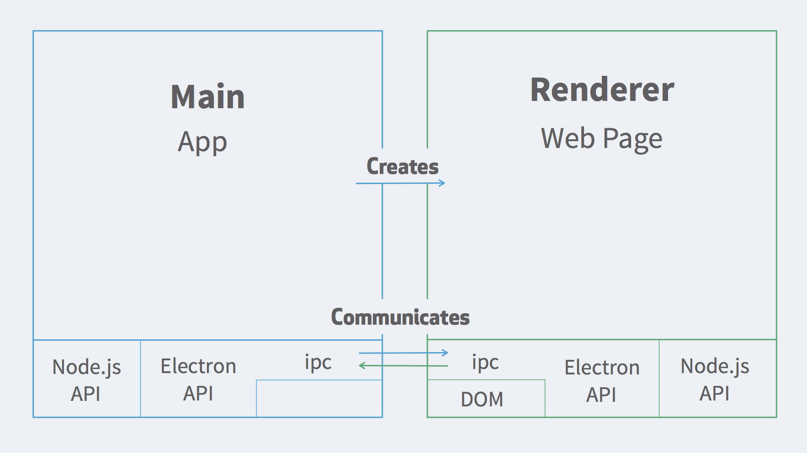

Electron allows you to create cross platform desktop applications using plain ol' Javascript!
It's (probably) in your life already


Atom, Nylas, Wordpress, and many more…
Getting started
npm install -g electron-prebuilt
or…
npm install --save electron-prebuilt
Hello Electron
hello-electron.js
Two different processes

Source
A really dumb (browser) window
hello-window.js
A slightly less dumb window
hello-apps.js
So many more possibilities
auto updating, clipboards, global shortcuts, native menu items, basically node module you can think of.
¡Atención!
Thank you!
bhnook@microsoft.com
@bhargav